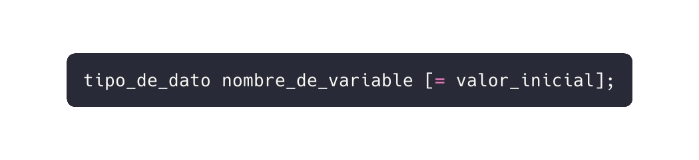
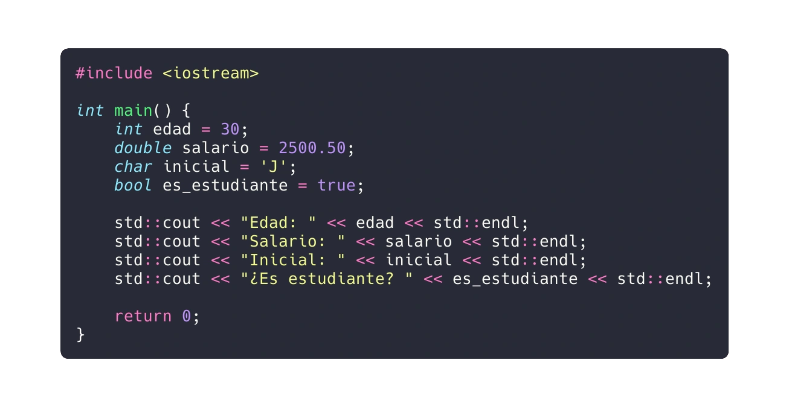

En este capítulo, exploraremos cómo declarar y utilizar variables y constantes en C++. Estos conceptos son fundamentales para cualquier programador, ya que nos permiten almacenar y manipular datos en nuestros programas. A lo largo del texto, proporcionaré ejemplos de código real para ilustrar cada punto.
Una variable en C++ es un espacio de almacenamiento en la memoria que puede contener datos. Estos datos pueden modificarse durante la ejecución del programa. Las variables nos permiten trabajar con valores dinámicos y realizar cálculos.
Para declarar una variable, especificamos su tipo, seguido del nombre de la variable. Opcionalmente, podemos asignarle un valor inicial. La sintaxis general es:
Aquí hay algunos ejemplos de declaraciones de variables:
En el ejemplo anterior:
int declara una variable de tipo entero llamada edad.double declara una variable de tipo decimal llamada salario.char declara una variable de tipo carácter llamada inicial.bool declara una variable booleana llamada es_estudiante.Una constante es un valor fijo que no cambia durante la ejecución del programa. En C++, podemos definir constantes utilizando #define o la palabra clave const.
#defineEn este ejemplo, PI se define como una constante con el valor de 3.1416.
constEn este caso, dias_en_semana es una constante de tipo entero.
Los datos son valores que representan información. Pueden ser números, caracteres, texto, fechas o cualquier otra entidad que necesitemos en nuestros programas. Los datos son la materia prima con la que construimos soluciones informáticas.
En la programación, los datos son la esencia de cualquier aplicación. Representan información que se procesa, almacena y manipula. En C++, los datos se clasifican en dos categorías principales: tipos de datos elementales y tipos de datos estructurados. Vamos a explorar cada uno de ellos en detalle.
Los tipos de datos elementales son los más básicos y se utilizan para representar valores simples. Aquí están algunos de los más comunes:
int: Representa enteros con signo (positivos o negativos).float: Precisión simple (32 bits). Ejemplo:double: Precisión doble (64 bits). Mayor rango y precisión que float.char para representar símbolos individuales.bool.Los tipos de datos estructurados agrupan información más compleja. Se dividen en homogéneos y heterogéneos:
Son aquellos que contienen el mismo tipo de datos. Por ejemplo los arreglos (array), son colecciones de elementos del mismo tipo. Un array de enteros puede contener [1, 2, 3, 4, 5].
Son aquellos que pueden contener diferentes tipos de datos. Por ejemplo: